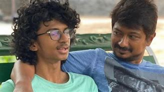
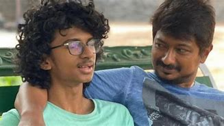
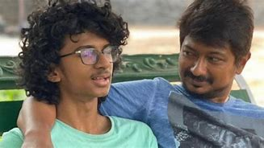
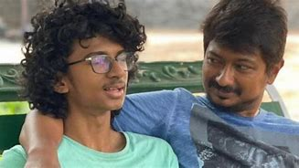

The Dravida Munnetra Kazhagam (Tamil pronunciation:Dravidian Progressive Federation; abbr. DMK) is an Indian political party based in the state of Tamil Nadu, where it is currently the ruling party, and the union territory of Puducherry, where it is currently the main opposition. The DMK was founded on 17 September 1949 by C. N. Annadurai (Anna) as a breakaway faction from the Dravidar Kazhagam headed by E. V. Ramasami (Periyar). DMK was headed by Annadurai as the general secretary from 1949 until his death on 4 February 1969. He also served as the chief minister of Tamil Nadu from 1967 to 1969. Under Annadurai, in 1967, DMK became the first party, other than the Indian National Congress, to win the state-level elections with a clear majority on its own in any state in India. M. Karunanidhi (Kalaignar) followed Annadurai as the first president of the party from 1969 until his death on 7 August 2018. He also served as the Chief Minister for five non-consecutive terms, in two of which he was dismissed by the Union government. After Karunanidhi's death, his son and former deputy, M. K. Stalin, succeeded as the party president and as a Chief minister of TamilNadu state from May-2021. DMK is the forth-largest party in the Lok Sabha. It currently holds 125 seats in the Tamil Nadu Legislative Assembly, and the DMK-led Secular Progressive Alliance holds 159 out of 234.
The DMK traces its roots to the South Indian Liberal Federation (Justice Party) founded by Dr C. Natesa Mudaliar in 1916, in the presence of P. Theagaraya Chetty, P. T. Rajan, T. M. Nair, Arcot Ramasamy Mudaliar and a few others in Victoria Public Hall Madras Presidency. The Justice Party, whose objectives included social equality and justice, came to power in the first general elections to the Madras Presidency in 1920. Communal division between Brahmins and non-Brahmin upper began in the presidency during the late-19th and early-20th century, mainly due to caste prejudices and disproportionate Brahminical representation in government jobs. The Justice Party's foundation marked the culmination of several efforts to establish an organization to represent the non-Brahmin upper castes in Madras and is seen as the start of the Dravidian movement. Periyar E. V. Ramasamy, a popular reformist leader at that time, had joined the Indian National Congress in 1919, to oppose what he considered the Brahminic leadership of the party. Periyar's participation at the Vaikom Satyagraha led him to start the Self-Respect Movement in 1926 which was rationalistic and "anti-Brahministic". He quit Congress and in 1935 he joined the Justice Party. In the 1937 elections, the Justice Party lost and the Indian National Congress under C. Rajagopalachari (Rajaji) came to power in Madras Presidency. Rajaji's introduction of Hindi as a compulsory subject in schools led to the anti-Hindi agitations, led by Periyar and his associates.[better source needed] In August 1944, Periyar created the 'Dravidar Kazhagam' out of the Justice Party and the Self-Respect Movement at the Salem Provincial Conference. The DK, conceived as a movement and not a political party, insisted on an independent nation for Dravidians called Dravida Nadu consisting of areas that were covered under the Madras Presidency. The party at its inception retained the flag of the South Indian Liberal Federation, which had a picture of a traditional type of balance signifying the idea of equality. Its central theme was to remove the degraded status imposed on Dravidians. To communicate this, the party adopted a black flag with a red circle inside it, with the black signifying their degradation and the red denoting the intention of the movement to uplift Dravidians. Over the years, many disagreements arose between Periyar and his followers. In 1949, several of his followers led by C. N. Annadurai decided to split from Dravidar Kazhagam, after Annadurai and part of the members decided to take part in electoral politics and Periyar had strong objection on it. The Dravidian philosophy culminated both politically and socially with DMK at the helm of administration. It was the first-ever subaltern movement in the history of sub-continent politics to have political representation from former lower-castes, and it was a marked move from generations of civic administrators from the upper-caste citizenry. This had a deep societal impact which resulted in increased political participation, which aided the representation of the emergent strata, enriched civic life, and subsequently strengthened the pluralist democracy.
The DMK's first foray into electoral politics, in the 1957 legislative assembly elections, was mixed. While it won 15 seats, many prominent leaders such as Annadurai and V. R. Nedunchezhiyan were defeated. It fared somewhat better in 1962, winning 50 seats and becoming the main opposition. Anti-Hindi Imposition agitations See also: Anti-Hindi agitations of Tamil Nadu The DMK, which split from the Dravidar Kazhagam in 1949, inherited the anti-Hindi imposition policies of its parent organization. Founder C.N. Annadurai had earlier participated in the anti-Hindi imposition agitations during 1940 and throughout the 1940s. In July 1953, the DMK launched an agitation against the Union government's proposed name-change of Kallakudi to Dalmiapuram. They claimed that the town's proposed new name (after Ramkrishna Dalmia) symbolized the exploitation of South India by the North. On 15 July, M. Karunanidhi (later Chief Minister of Tamil Nadu) and other DMK members removed the Hindi name from Dalmiapuram railway station's name board and protested on the tracks. In the altercation with the police that followed the protests, two DMK members lost their lives, and several others, including Karunanidhi and Kannadasan, were arrested. The DMK continued its anti-Hindi Imposition policies throughout the 1950s, along with the secessionist demand for Dravida Nadu, in which it was originally more radical than the Dravida Kazhagam. On 28 January 1956, Annadurai, along with Periyar and Rajaji, signed a resolution passed by the Academy of Tamil Culture endorsing the continuation of English as the official language. On 21 September 1957, the DMK convened an anti-Hindi Conference to protest against the imposition of Hindi. It observed 13 October 1957 as "anti-Hindi Day". On 31 July 1960, another open-air anti-Hindi conference was held in Kodambakkam, Madras. In November 1963, DMK dropped its secessionist demand in the wake of the Sino-Indian War and the passage of the anti-secessionist 16th Amendment to the Indian Constitution. However, the anti-Hindi stance remained and hardened with the passage of Official Languages Act of 1963. The DMK's view on Hindi's eligibility for official language status were reflected in Annadurai's response to the "numerical superiority of Hindi" argument: "If we had to accept the principle of numerical superiority while selecting our national bird, the choice would have fallen not on the peacock but on the common crow." Formation of state government In 1967, DMK came to power in the Madras State 18 years after its formation and 10 years after it had first entered electoral politics. This began the Dravidian era in the Madras province, which later became Tamil Nadu. In 1967, the Congress lost nine states to opposition parties, but it was only in Madras that a single non-Congress Party (namely, the DMK) won a majority. The electoral victory of 1967 is also reputed to be an electoral fusion among the non-Congress parties to avoid a split in the Opposition votes. Rajagopalachari, a former senior leader of the Congress Party, had by then left the Congress and launched the right-wing Swatantra Party. He played a vital role in bringing about the electoral fusion amongst the opposition parties to align against the Congress.At that time, his cabinet was the youngest in the country. Other achievements Annadurai legalized self-respect marriages for the first time the country. Such marriages did not involve priests presiding over the ceremonies, and thus a Brahmin was not needed to carry out the wedding. Self-respect marriages were a brainchild of Periyar, who regarded the then conventional marriages as mere financial arrangements which often led to great debt through dowry. Self-respect marriages, according to him, encouraged inter-caste marriages and caused arranged marriages to be replaced by love marriages. Annadurai was also the first to promise to subsidize the price of rice in order to campaign for his election. He promised one rupee a measure of rice, which he initially implemented once in government, but had to withdraw later. Subsidizing rice costs are still used as an election promise in Tamil Nadu. It was Annadurai's government that renamed Madras State to Tamil Nadu, its present-day name. The name change itself was first presented in the upper house (Rajya Sabha) of the Parliament of India by Bhupesh Gupta, a communist MP from West Bengal, but was then defeated. With Annadurai as chief minister, the state assembly succeeded in passing the bill renaming the state. Another major achievement of Annadurai's government was to introduce a two-language policy[which?] over the then popular three language formula. The three-language formula, which was implemented in the neighboring states of Karnataka, Andhra Pradesh and Kerala, entitled students to study three languages: the regional language, English and Hindi.